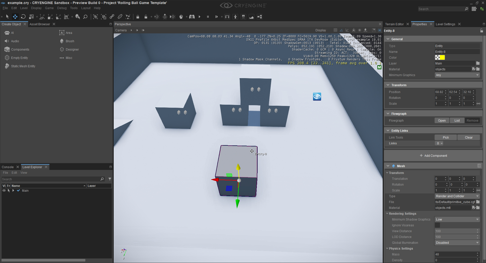
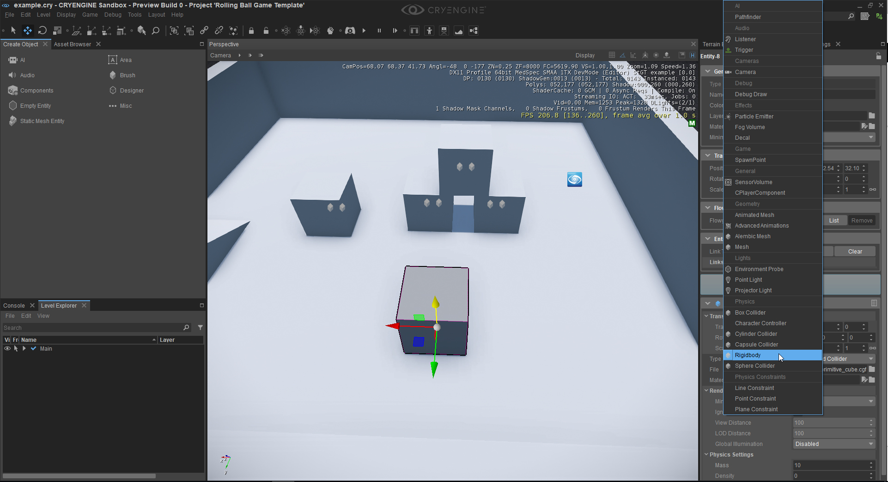
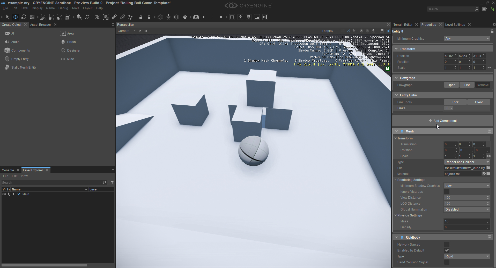
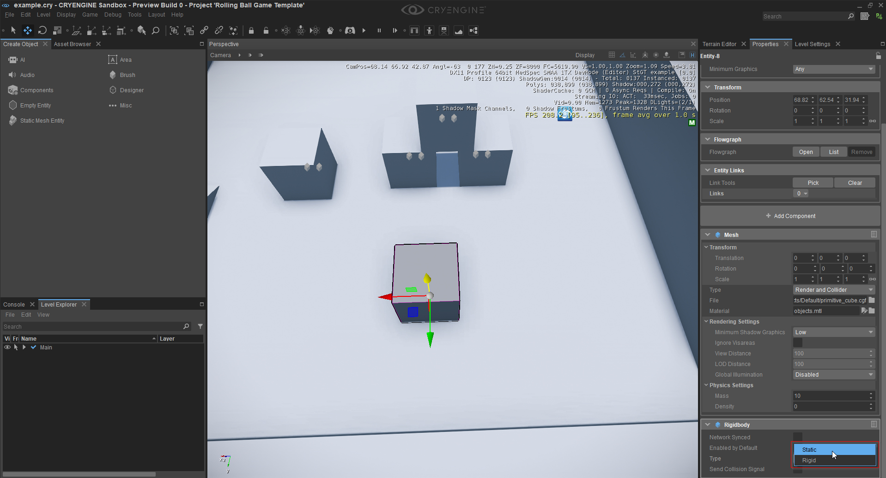

Using the Rigidbody Component
This tutorial concentrates on the Rigidbody Component and serves as an introduction to its use and to some of its features. The Rigidbody Component is responsible for the physicalization of an Entity i.e. your Entity becomes part of the physical world and will be simulated in it. Note: An Entity can only hold one single Rigidbody.
Before attempting this tutorial we recommend that you read the Entity Components documentation. Doing so will give you a much better understanding of the concepts behind CRYENGINE's Entity Components, furthermore, the documentation can be used as a reference guide in regard to the various attributes/parameters that relate to each of the available Components.
Different methods can be used to create a new Entity, for more information see the Entity Components documentation.
You will need to open a new or an existing level in the Sandbox Editor in order to undertake this tutorial.
- The Rigidbody Component needs some visual representation to better explain it, therefore we first need to add a Mesh Component - if you are not familiar with the Mesh Component, then please refer to that Use Case before attempting this Rigidbody tutorial. In the image below a Mesh (a cube in this case) has been created from the C# Rolling Ball template.

- Once you have created your Entity and added the Mesh Component to it you can start to add the Rigidbody Component. Click on the + Add Component button and select the Rigidbody Component.

- Your Entity will now have two components - the Mesh Component and the Rigidbody Component. After adding the Rigidbody Component the Entity will now be physicalized in the world (since we have already added a Mesh Component the Rigidbody will take the Mesh's collision to simulate the physics). The default settings of the Rigidbody Component set the Entity to be 'Rigid' which means that the Entity will be part of the dynamic physics simulation. If you now start the game or the simulation you can see that your Entity will fall down and interact with other objects.

- Now that the Rigidbody Component has been added the cube can be pushed around and it will collide with other objects. You can now start to experiment with the physical values of your Components to create different effects. For example, you could set the mass of your Mesh Component to a different value and see how the Entity reacts to the change. You can also change the Rigidbody Component to be static. This means that your Entity will be static at that position and while other Entities can collide with it, it can't be moved and will therefore not be affected by 'things' around it, for example, it will be immune from the effects of gravity or explosions.

- Now that your Entity is static you can start the game and see how the Entity reacts to collisions. You also have other attributes in the Rigidbody Component, for example, you can disable the Rigidbody by default - this can be helpful for example when you want to enable it later in the game. You can also register your Component to receive collision events - this means that every time this Rigidbody collides with something else you will receive an event in C++/C# or in Schematyc and which you can act upon. For example, if your Entity is a bullet and this bullet collides with something, then you can delete the Entity so that the bullet doesn't endlessly fly around. Note: If you just want to create Static Meshes, then you do not have to create/place Entities for that purpose (this is expensive in respect to performance). So if you just want to place geometry with a collision in the scene, then you should use Brushes, these can be found in the Create Object tool.